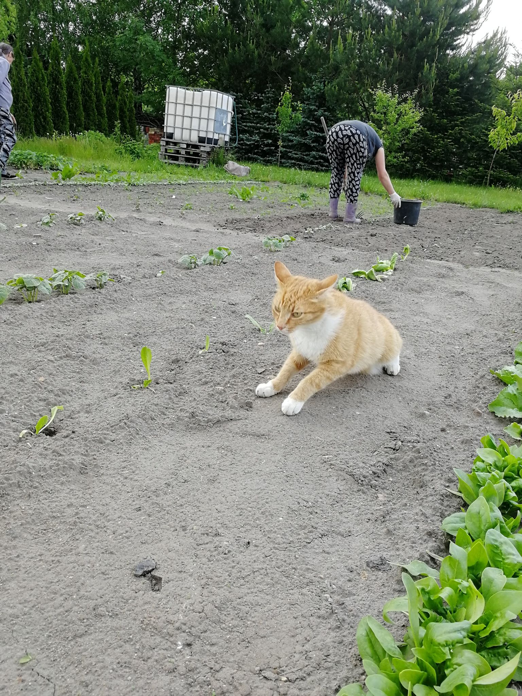

Oh my god, what a fast fucking cat!

The last thing we are gonna talk about today is
the physical activity. Or, if you prefer,
running around at 4 a.m. like a moron.
We hold to 3 rules when it comes to exercising
- The faster you go, the faster you go.
- When you hear a whistle and a metallic hit,
the exercise's immediately over. Back to base.
- Gradually expand your area of training,
it's a good idea to train on an airport
runway or a nearby highway.
- But
- don't
- ever
- come
- back
- clean!
The thing is, we as cats are goal-oriented
animals. No one is qualified to tell us what
to do. Exept our hooman mom.
So if we choose to stay in bed all day
(as I prefer), or our task for the evening is
to run as fast as we can into the setting sun,
just let us. Otherwise you'll probably end
up with some subtle scratches on your cheeks.
Alternatively, you'll listen to a serenade of
disgrace composed specially for you in a
doorway.
back